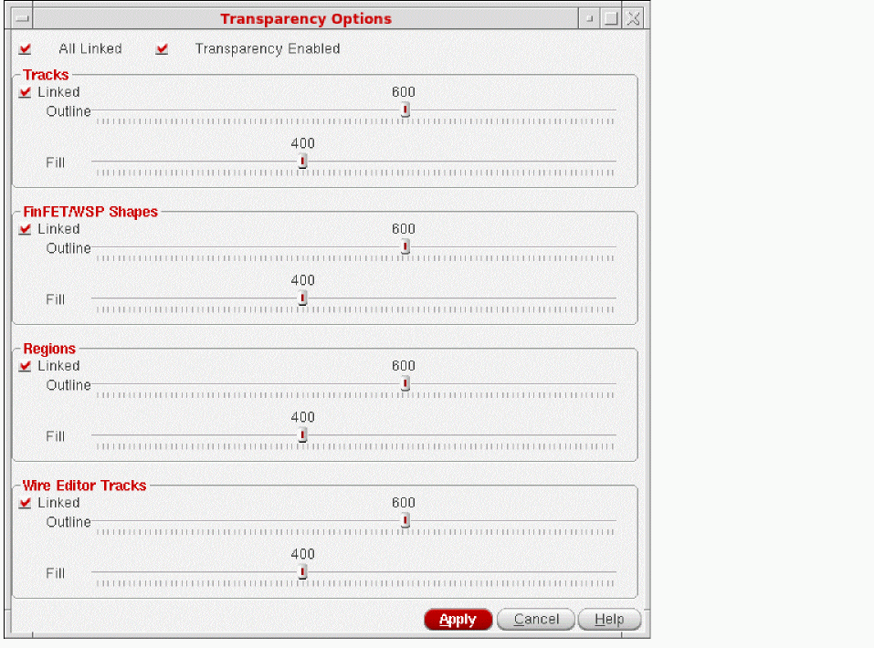

Controlling Transparency of Tracks With Alpha Blending
The alpha blending feature lets you control the transparency of tracks, FinFET and WSP shapes, regions, and Wire Editor tracks. You can control the transparency at different levels for the track fill or outline using the options available in the Transparency Options form.
To control the transparency of tracks:
-
In the layout window, choose Options – Transparency.
The Transparency Options form opens.
 - Select the Transparency Enabled check box to enable the transparency options in the form.
- You can specify the outline and fill values for Tracks, FinFET/WSP Shapes, Regions, and Wire Editor Tracks using the sliders.
You can use the Linked check box to change the Outline and Fill values for Tracks, FinFET/WSP Shapes, Regions, or Wire Editor Tracks by tuning only one slider at a time. If you want to change the Outline and Fill values of Tracks, FinFET/WSP Shapes, Regions, and Wire Editor Tracks together by tuning only a single slider, select the All Linked check box.
You can also use the following environment variables to control the transparency at different levels for the track fill or outline.
Related Topics
Return to top